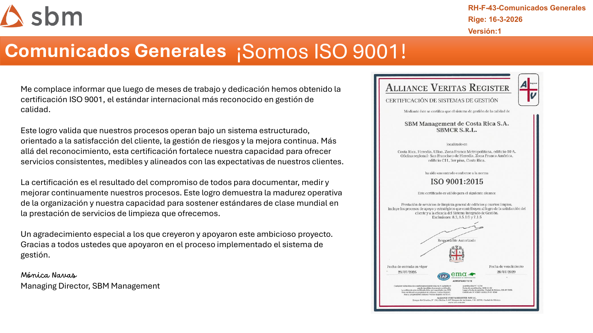
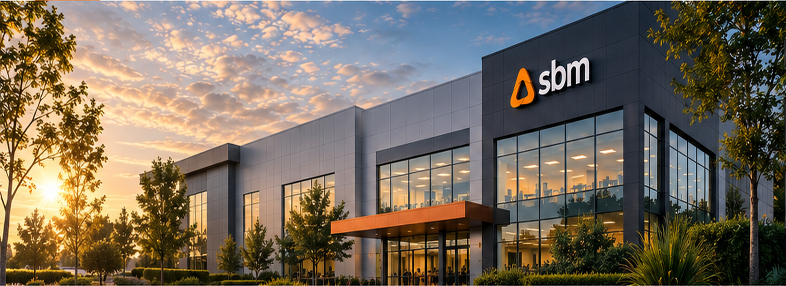
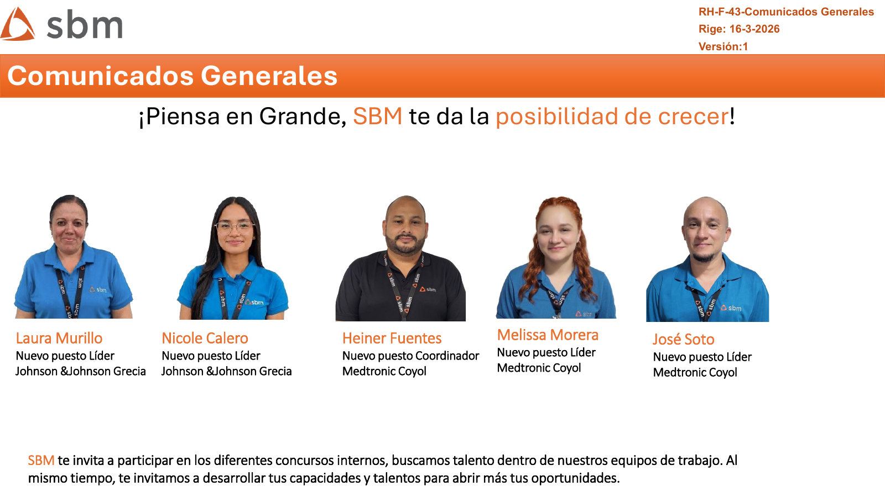
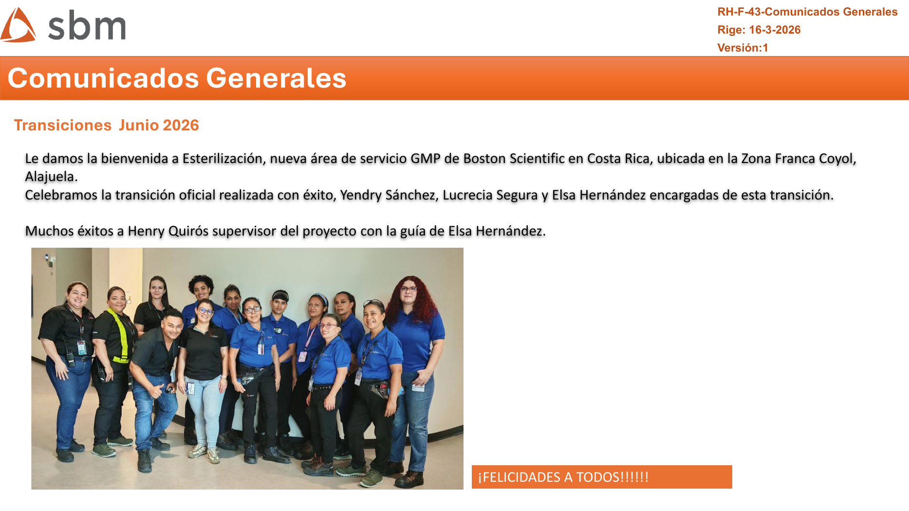
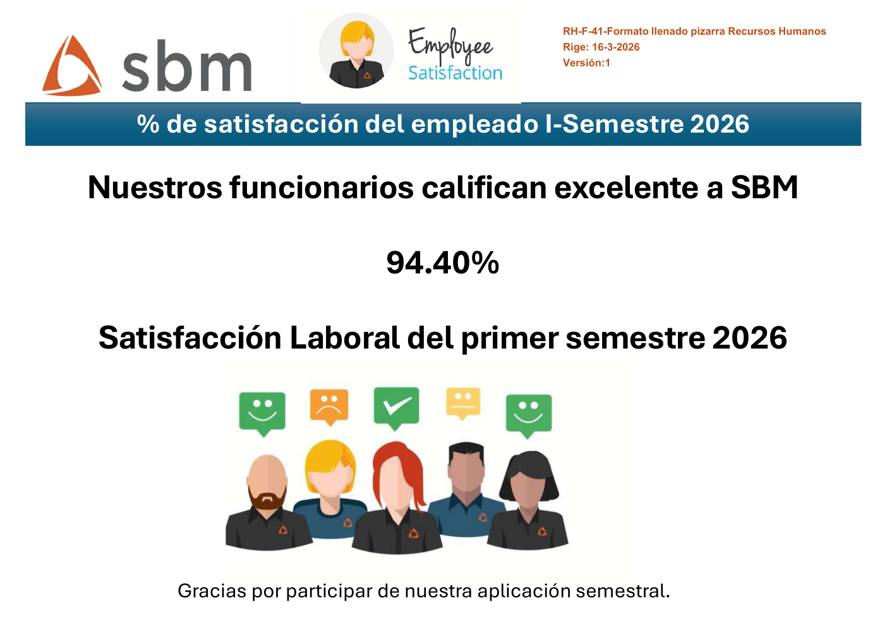
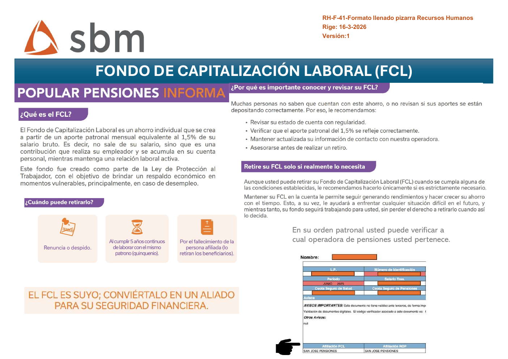
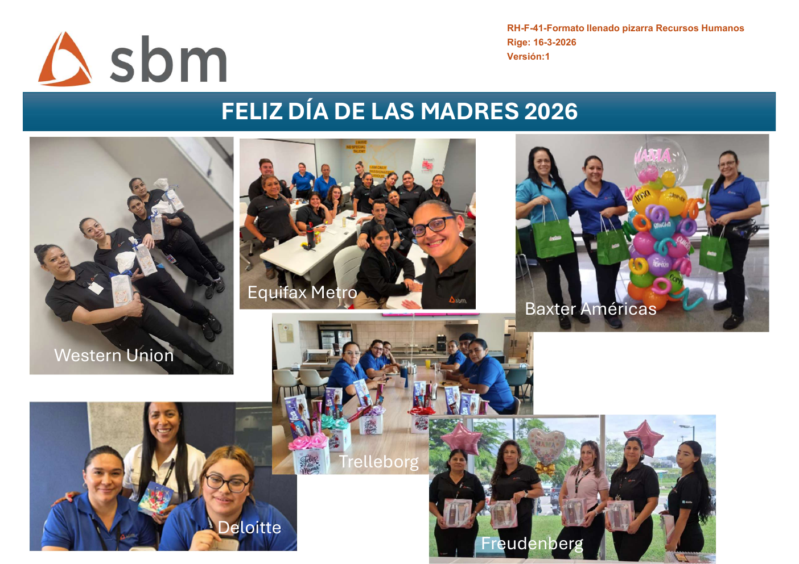

Destacado
¡Somos ISO 9001!
Un logro que refleja el compromiso con la calidad, nuestros clientes y la mejora continua.
Leer historia →
Conozca los logros, las personas y las iniciativas que marcaron esta edición.


Nueve colaboradores asumen nuevos retos como líderes y coordinadores.

Celebramos la transición oficial de un nuevo proyecto en Costa Rica.
Resultados, reconocimientos y buenas prácticas para cuidar a todo el equipo.
33 eventos: 21 relacionados con el trabajo y 12 no relacionados.
Ver estadísticas →Reconocemos a Stefany, Marvin y Yureysi por convertir la atención en prevención.
Ver reconocimiento →Buenas prácticas para mover materiales y equipos de limpieza con seguridad.
Abrir guía →Crecimiento, bienestar y momentos que fortalecen nuestra cultura.
Talento interno que crece dentro de SBM.

Resultado del primer semestre 2026.

Información para cuidar su seguridad financiera.

Momentos compartidos en diferentes proyectos.
Nuevos proyectos y equipos que continúan ampliando nuestra presencia.
Abra o descargue los comunicados oficiales de setiembre.